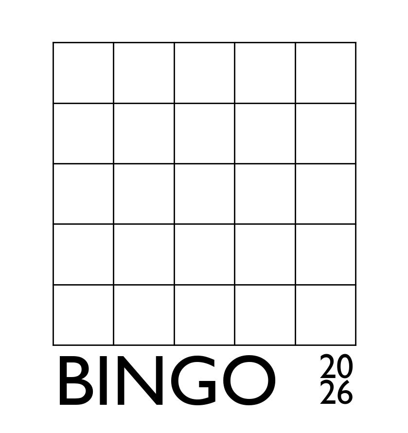

2026 Bingo
I'm suspicious of new years' resolutions -- we all seem to have enough to be getting on with, and for things that do need changing,
gentle adjustments as necessary are probably better than big January first declarations. But it's still nice to notice
the passage of time and to be intentional about some things. A friend told me about fun bingo a while back, which works roughly
likt this: write down 25 things that could be nice to do in the next year, put the list on your fridge, and see which can can be checked off, in a no-pressure way.
No need to do all 25, five in a row is good enough.
There are no real rules about what kinds of things
go on fun bingo, but for myself I am trying to keep it actually fun and low key as opposed to vaguely aspirational:
take a train to a new city, grow a new type of vegetable, etc. Only read Anna Karenina if you really want to.
(Another inspiration for 2026 bingo was my friend V, who had as a goal "see every British mammal".
He hastened to add "one of each kind! And the various types of mice don't count.")
Anyway, here's a template, for anyone who wants. A downloadable pdf is here.

PF 2026! May it be a nice time. 🌈